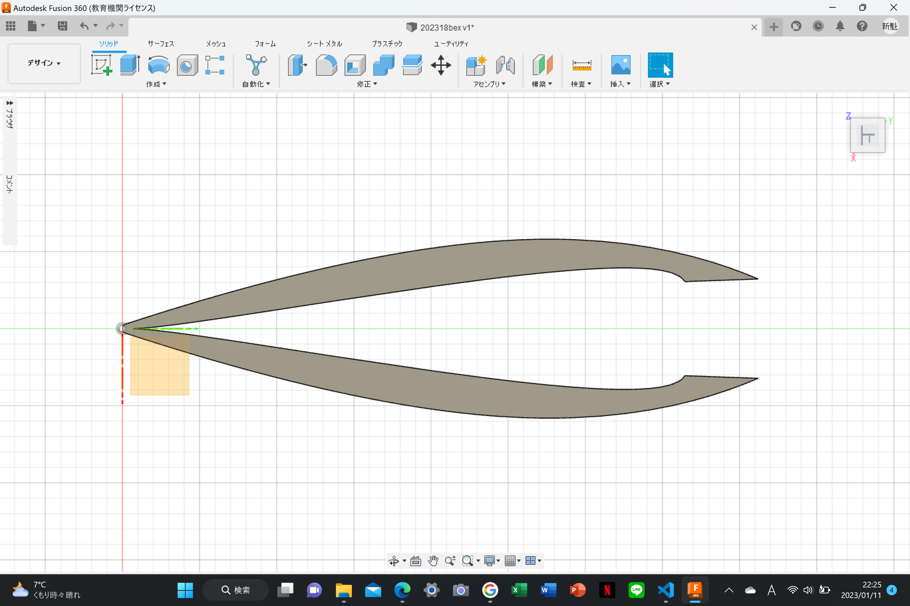
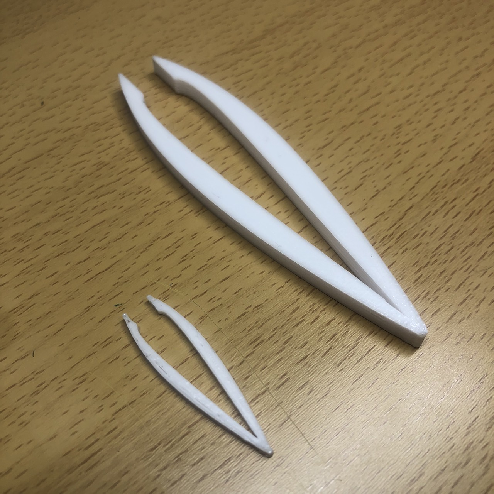
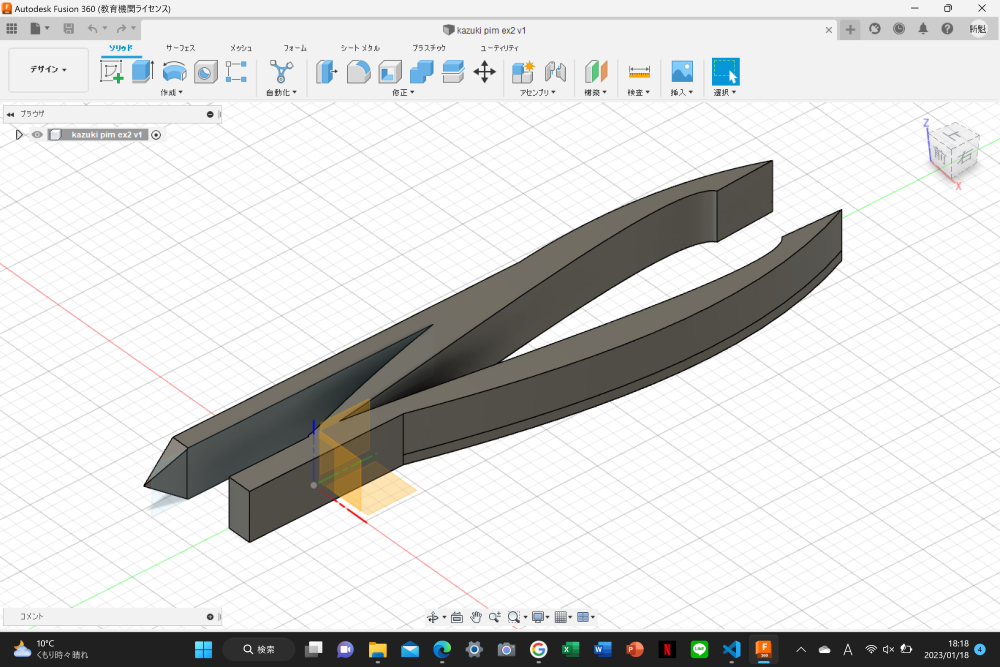
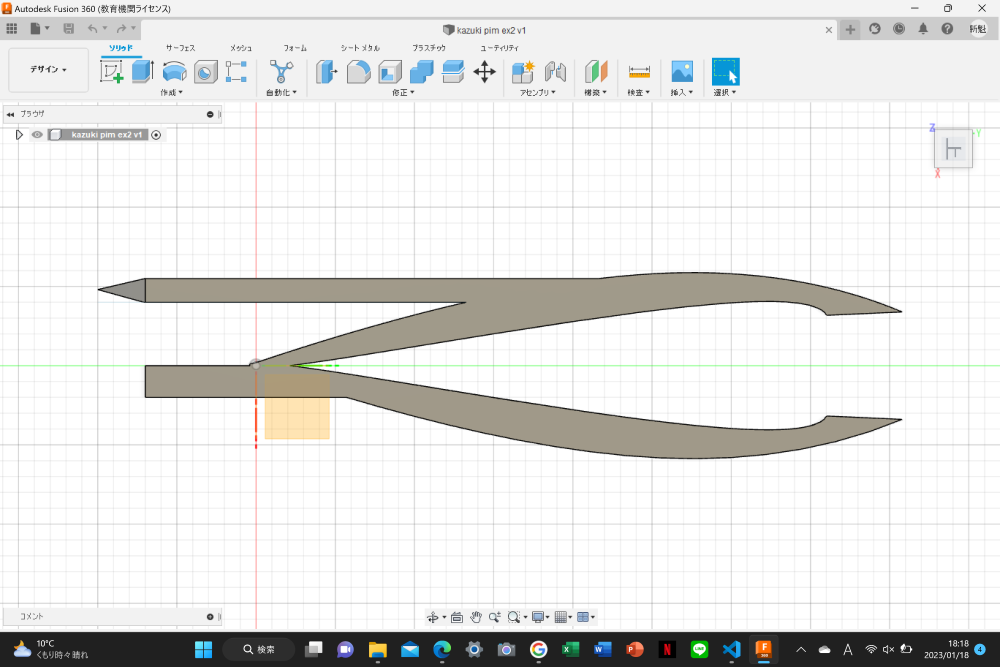

テーマ決め
ピンセットを作るにあたって最初にテーマを決めます。私は普段ピンセットを使わないので頭に思いついた単語をいくつか書き出してみます。
今回は画像左上にある「カップラーメン」をテーマにして作成していきます。
「カップラーメン」を作る時の手順
まずはカップラーメン専用のピンセットを作るために、カップラーメンを作る時の手順を細かく書き出していきます。
今回私はリストにある「フィルムを剥がす」「かやくを取り除く」「蓋を抑えるの」３つの手順を楽にするピンセットを制作していきます。
大まかな形をスケッチで決めていく
Fusion360を使ってピンセットを形作る
ピンセット本体を制作。蓋どめを付けるために長さを上限の5cmより少し短くしておきます。

試しにプリントしてみました。奥は2.5倍の大きさでプリントしたものです。

次は蓋どめを制作して、本体に結合していきます。本体をすこし厚くしてみました。
この蓋止めはカップラーメンの容器の大きさの関係でこれ以上大きく作ることが難しかったので今回作る小さなピンセットにはぴったりでした。
この蓋止めはカップラーメンの容器の大きさの関係でこれ以上大きく作ることが難しかったので今回作る小さなピンセットにはぴったりでした。
 
プリントしたのがこちら
まとめ
私は普段ピンセットを使わないのでピンセットの能力を伸ばす方法は分からなかったので、ピンセットに新しい価値を追加する方向で制作を進めていきました。
今回のピンセット制作の１番の難関は大きさの制限がとても小さい事だったのですが、今回制作したピンセットはそこを上手く利用したものになったと思います。